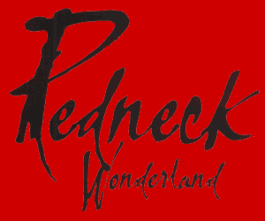

|
 |
|
"Return To Sender" and "Seeing Is Believing" produced by Warne Livesey, Magoo and Midnight Oil, mixed by Warne Livesey "Comfortable Place On The Couch" and "Drop In The Ocean" produced by Magoo, Warne Livesey and Midnight oil, mixed by Warne Livesey "The Great Gibber Plain" produced by Magoo/Midnight Oil, additional production by Warne Livesey, mixed by Magoo "Safety Chain Blues", "White Skin Black Heart" produced by Magoo/Midnight Oil, mixed by Warne Livesey "Blot", "What Goes On" produced by Magoo/Midnight Oil, mixed by Magoo "Redneck Wonderland" and "Concrete" produced by Warne Livesey/Midnight Oil, mixed by Warne Livesey "Cemetery In my Mind" produced by Warne Livesey and Midnight Oil, mixed by Warne Livesey and Brent Clark
Midnight Oil:
James Moginie - guitar, keyboards, synthesizer and vocals. Martin Rotsey - guitar. Bones Hillman - bass and vocals. Rob Hirst - drums and vocals and Peter Garrett - vocals All tracks Midnight Oil - Published by Sprint Music, Sony/ATV
Management - Gary Morris The Office - Arlene Brookes and Craig Allen Publicity - Jones PR
European Agent - (Fair Warning/Wasted Talent) John Jackson and US Agent - (C.A.A.) Mitch Rose.
Recorded at Sing Sing Studios, Melbourne (assistant engineers Dave Davis and Matt Voigt) except "Redneck Wonderland" recorded at Electric Avenue, Sydney Mixed at Sing Sing, 301 Sydney and b.j.g. London (Alex Clark and James Wagstaff are the assistants at b.j.g) Mastered by Tim Young at Metropolis, London.
Jeremy Smith french horn on "Drop In The Ocean" String arrangement for "Safety Chain Blues" by Robin Casinader Helen Mountford cello Hope Csutoros violin on "Comfortable Place On The Couch".
Concept, design and artwork by Rockin' Doddles Cover concept by Kevin Wilkins / Midnight Oil / Rockin' Doodles Backcover photography and B/W inside photography by Paul Blackmore.
Midnight Oil wish to thank their families, friends and fans, Nick Launay, Phil Punch, Grant Pudig, Phil Butson, Kaj Dahlstrom, Darling Harbour (Studios), and Robert Taylor.
Album released July 98
489971